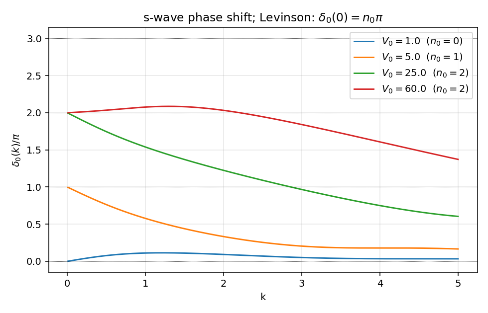
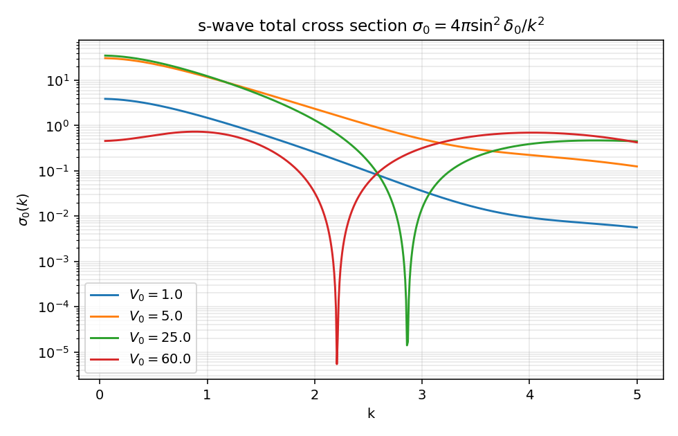
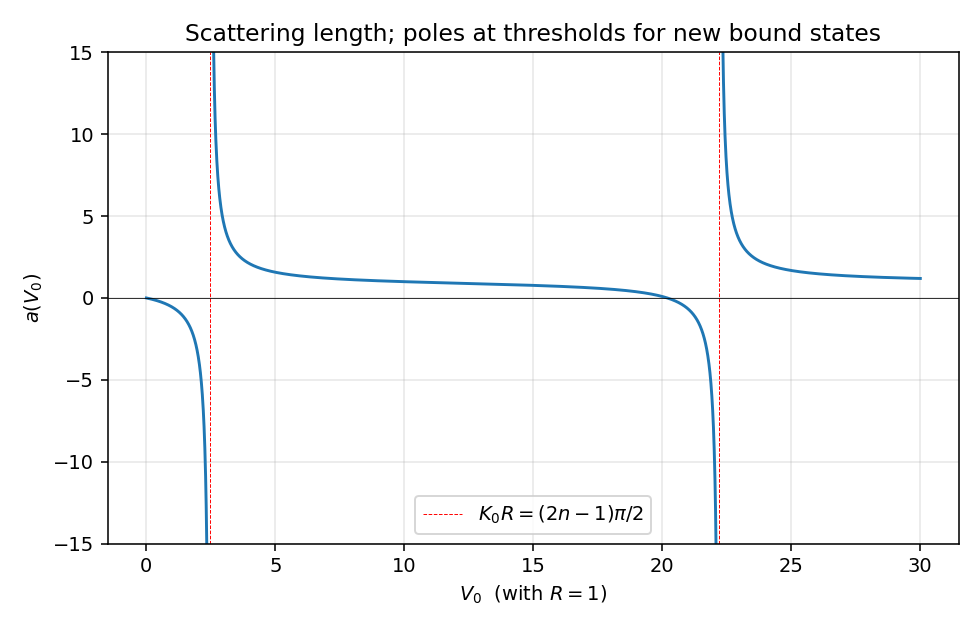
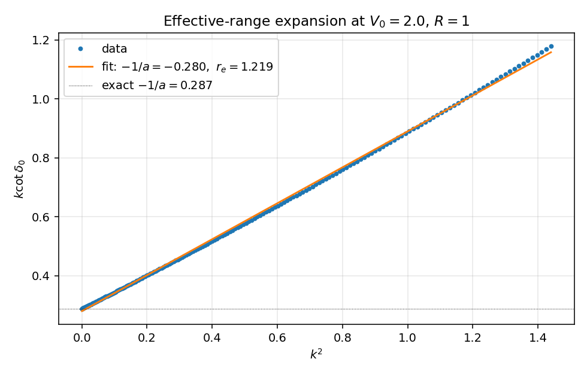

三维方阱 s 波散射#
第二篇可解模型：把分波 LS 方程、相移、散射长度、有效力程、Levinson 定理、束缚态极点这一套语言全部钉到一个解析势上。
势保持中心对称，问题可以分波分离；只看 s 波，所有计算都在 \(u(r) = r\psi_0(r)\) 这条一维方程上完成。和第 1 篇一样，全文取 \(\hbar = 1\)，\(2\mu = 1\)，故 \(E = k^2\)。
目标#
- 把
05_partial_wave_projection.zh.md:340的分波 LS 方程在最便宜的中心势上落地：写出 s 波相移的解析公式。 - 把"低能两参数（\(a\)，\(r_e\)）足够"这一核工程惯用语，作为 \(k\cot\delta_0\) 解析展开的直接结果导出。
- 把
02_Green_operator.zh.md:478中"束缚态 = 物理面实极点"的结论第二次具体化：方阱的束缚态由超越方程在正虚轴 \(k = i\kappa\) 上的根给出。 - 用 Levinson 定理把"束缚态数"和"低能相移"绑成一个整数关系，给数值结果一个非平凡的检验点。
势的定义#
吸引方阱，深度 \(V_0\)，半径 \(R\)。s 波径向方程 \(-u''(r) + V(r) u(r) = k^2 u(r)\)，边界 \(u(0) = 0\)，\(r \to \infty\) 时取自由波形。
阱内波数 \(K = \sqrt{k^2 + V_0}\)，阱外仍是 \(k\)。两区域的解：
\(u_<\) 选 \(\sin\) 是因为 \(u(0)=0\)；\(u_>\) 写成相移形式直接读出 \(\delta_0\)。
s 波相移的匹配#
在 \(r = R\) 上要求 \(u\) 与 \(u'\) 连续，等价于要求对数导数 \(u'/u\) 连续：
这就是中心结果。整理出 \(\delta_0\) 的显式：
等价的、数值更友好的写法（避开 \(\tan(KR)\) 在 \(KR = \pi/2\) 等处的奇点）：
整数 \(n\) 选择决定相移落在 Riemann 上哪一片，物理选取由 Levinson 定理钉住（见下）。
散射长度与有效力程#
低能展开 \(\delta_0(k) = -ak + O(k^3)\) 定义散射长度 \(a\)。代入匹配条件，令 \(K_0 = \sqrt{V_0}\)：
当 \(K_0 R \to (\pi/2)^-\) 时 \(\tan(K_0 R) \to +\infty\)，\(a \to -\infty\)；当 \(K_0 R \to (\pi/2)^+\) 时 \(a \to +\infty\)。穿过 \(K_0 R = \pi/2\) 的瞬间，第一束缚态从阈值出来；后续 \(K_0 R = 3\pi/2, 5\pi/2, \ldots\) 处依次冒出新的束缚态。每次冒出 \(a\) 都从 \(-\infty\) 跳到 \(+\infty\)，是核物理里"unitary limit / Feshbach 共振附近"现象的最简单解析模型。
低能展开继续算下去得到有效力程公式（Bethe 1949）：
对方阱，\(r_e\) 的解析式为
具体推导可见 Newton《Scattering Theory of Waves and Particles》§11.2。本文不再展开——我们直接用数值拟合 \(k\cot\delta_0\) vs \(k^2\) 验证线性关系。
束缚态条件与 Levinson 定理#
s 波束缚态对应正能量散射解析延拓到 \(k = i\kappa\)（\(\kappa > 0\)）。代入匹配条件，把 \(k \to i\kappa\)，并把外区波改写成衰减解 \(u_>(r) \propto e^{-\kappa r}\)：
每条根 \(\kappa_n \in (0, K_0)\) 给一个束缚态。代数告诉我们：束缚态数 \(n_0\) 由
即 \(K_0 R > \pi/2\) 时有 1 个，每过 \(\pi/2\) 多 1 个。这一计数与 \(a(V_0)\) 的极点位置完全吻合——每条阈值正好把一个新的束缚态拉到 \(E = 0\)。
Levinson 定理（s 波，无零能束缚态时）：
短程势下 \(\delta_0(\infty) = 0\)，故 \(\delta_0(0) = n_0\pi\)。这条整数关系给数值实验一个干净的检查点：把 \(V_0\) 调过几个阈值，相移在 \(k\to 0\) 极限处必须严格地落在 \(\pi\) 的整数倍上。下面的 phase_shift_vs_k.png 直接读得出这一点。
复 k 平面束缚态极点#
s 波散射振幅 \(f_0(k) = (e^{2i\delta_0(k)} - 1)/(2ik)\) 在物理面（\(\operatorname{Im}k > 0\) 半平面）上的极点对应束缚态。把 \(f_0\) 写成
可见极点条件是 \(k\cot\delta_0(k) = ik\)，代入匹配条件即上面的 \(\bar K\cot(\bar K R) = -\kappa\)（\(k = i\kappa\)）。这条超越方程数值找根，根的位置 \(\kappa_n\) 给出束缚态能量 \(E_n = -\kappa_n^2\)。极点结构与 02_Green_operator.zh.md:478 中"束缚态是物理面上的实极点"的论断对应：方阱的物理面上恰好有 \(n_0\) 个 \(k = i\kappa_n\) 极点，散射振幅在这些点处发散。
数值与图#
完整可运行的 02_square_well_3d.py 在同目录。核心是几行：
def delta0(k, V0, R=1.0):
K = np.sqrt(k * k + V0)
raw = np.arctan2(k * np.sin(K * R), K * np.cos(K * R)) - k * R
return np.unwrap(raw) + n0_shift(V0, R) # Levinson anchoring
def cross_section(k, V0, R=1.0):
return 4 * np.pi * np.sin(delta0(k, V0, R))**2 / k**2
def scattering_length(V0, R=1.0):
K0 = np.sqrt(V0)
return R * (1 - np.tan(K0 * R) / (K0 * R))
四张图各自验证一条公式。

\(\delta_0(k)\) 对 \(V_0 \in \{1, 5, 25, 60\}\)（取 \(R=1\)）。低能极限严格落在 \(0, \pi, 2\pi, 2\pi\) 上（\(K_0 R\) 阈值 \(\pi/2, 3\pi/2\) 之间分别给 0, 1, 2 个束缚态；\(V_0 = 60\) 在第三阈值之内仍是 2）。这正是 Levinson。

\(\sigma_0(k) = 4\pi\sin^2\delta_0/k^2\)。\(V_0 = 25, 60\) 在中等 \(k\) 处出现尖锐极小，这是 Ramsauer-Townsend 现象：相移穿过 \(\pi\) 的整数倍，\(\sin\delta_0 = 0\)，\(\sigma_0\) 完全归零。低能 \(k\to 0\) 极限 \(\sigma_0 \to 4\pi a^2\)。

\(a(V_0)\) 在 \(V_0 \in [0, 30]\)。两条红色虚线 \(V_0 = (\pi/2)^2 \approx 2.47\) 与 \((3\pi/2)^2 \approx 22.2\) 对应 \(K_0 R = \pi/2, 3\pi/2\)，正是两次束缚态阈值。\(a\) 在阈值左从 \(-\infty\) 跳到右的 \(+\infty\)，每次新束缚态出现 \(a\) 必经一次符号翻转。

固定 \(V_0 = 2.0\)（弱阱，无束缚态），画 \(k\cot\delta_0\) 对 \(k^2\) 的散点。直线拟合给出截距 \(-1/a \approx -0.280\)、斜率 \(r_e/2 \approx 0.610\)。截距与解析散射长度 \(a = 1 - \tan\sqrt 2 / \sqrt 2 \approx 3.479\) 给出 \(-1/a \approx -0.287\)，吻合。这就是有效力程展开"两个参数足以描述低能 s 波"的实验性证据。
sanity_checks() 在脚本末尾验证三条：
1. \(\lim_{k\to 0} -[\delta_0(k) - n_0\pi]/k\) 与解析 \(a\) 吻合（多个 \(V_0\)）；
2. \(K_0 R = \pi/2 + 0.1\) 时 \(|a| > 5\)（束缚态阈值附近增强）；
3. \(|S_0(k)| = |e^{2i\delta_0}| = 1\) 在多个 \(k\)、\(V_0\) 处弹性幺正。
与主线笔记的对账#
| 主线笔记 | 方阱 s 波中的对应 |
|---|---|
05_partial_wave_projection.zh.md:340，分波 LS 方程 \(T_l = V_l + V_l\, G_0\, T_l\) |
中心势下分离成各 \(l\) 独立。s 波径向方程的解析解直接绕过积分方程，给 \(\delta_0(k)\) 闭式。 |
05_partial_wave_projection.zh.md:366，\(f_l = e^{i\delta_l}\sin\delta_l/k\) |
代入 \(\delta_0\) 解析式得到 \(f_0(k)\)；总截面 $\sigma_0 = 4\pi |
05_partial_wave_projection.zh.md:378，\(S_l = e^{2i\delta_l}\)，$ |
S_l |
02_Green_operator.zh.md:478，束缚态 = 物理面实极点 |
方阱物理面上有 \(n_0\) 个 \(k = i\kappa_n\) 极点；\(n_0 = \lfloor K_0 R/\pi + 1/2\rfloor\)。 |
03_S_matrix_and_cross_section.zh.md:451，光学定理 \(\operatorname{Im}f(\theta=0) = (k/4\pi)\sigma_\text{tot}\) |
s 波单分波情形：\(f_0 = e^{i\delta_0}\sin\delta_0/k\)，\(\operatorname{Im}f_0 = \sin^2\delta_0/k\)，乘 \(4\pi/k\) 等于 \(\sigma_0\)，自动恒等。 |
04_T_and_U_operators.zh.md:296，\(T = V + VG_0 T\) |
对方阱求 on-shell \(T_0(k,k;E)\) 不需要解积分方程：用 \(T_0 = -e^{i\delta_0}\sin\delta_0/(\pi\mu k)\) 反代即可。 |
低能两参数 \((a, r_e)\) 与解析延拓极点之间还有一个有名的关系（Bargmann 不等式、ERE 与 Jost 函数的低能展开），将在第 5 篇 separable rank-1 模型里以最干净的代数形式重复出现。
next-step#
留给后续的几条线：
- 把"\(a \to \infty\)"作为 unitary 极限：在 \(K_0 R \to \pi/2\) 邻域，\(\delta_0\) 的低能行为坍缩为 \(\sigma_0 = 4\pi/k^2\)。这是冷原子 Feshbach 共振附近的物理，也是离散标度对称（Efimov 物理）的入口。
- p 波及更高分波：方阱的高 \(l\) 相移用球贝塞尔函数匹配，仍然是闭式，但不再像 s 波这么干净。
- 把方阱换成 delta-shell \(V(r) = \lambda\delta(r-R)/r^{?}\)（第 3 篇）：势在一点上集中，匹配条件变成跳变，\(T\) 矩阵在分波基里直接 separable 化。
Created: 2026-05-08